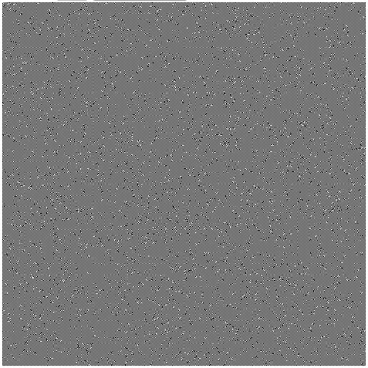
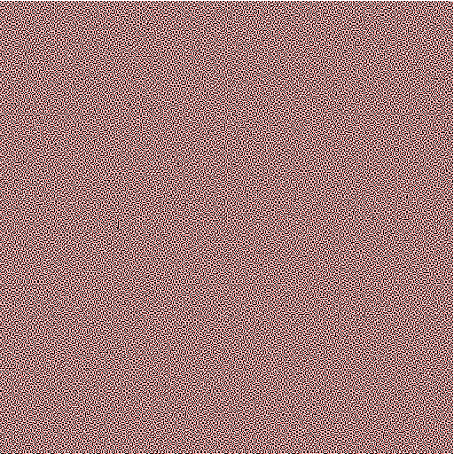

An introduction to Markov chains with mathematical art
 Tim Swast on
Tim Swast on
Tim Swast on
Tim Swast on
In this post, you'll use Markov chains to generate artworks and analyze the distributions of colors. This post contains interactive elements and is best experienced with a web browser at the original post.
A Markov chain generates a random sequence of states; it is a stochastic model which changes state over discrete time. It has a set of states, a matrix of transition probabilities, and its transitions depend only on the current state and not further history.
Play with this JavaScript widget I have written. States are represented by colors and follow a Hilbert curve to fill the image.. Transition probabilities are shown as per-thousands. If the sum of the row is less than 100%, the remaining probability adds to the transition keeping the state the same.
We can define Markov chains formally as well. Assume we have a set of \(n\) states,
\[ S = \{ 1, 2, 3, \dots, n \}. \]The Markov chain generates a random sequence,
\[ \{x_1, x_2, \dots, x_k, x_{k+1}, \dots \}. \]The probabilities of \(x_1\) being in any particular state follow an initial distribution, \(\{a_k\}.\) State transitions depend only on the previous state, that is, we only care about the conditional probabilities,
\[ P[x_{m+1}=j | x_{m}=i], \forall i,j \in S. \]Therefore, we can represent a Markov chain by its transition matrix,
\[ T = \begin{pmatrix} p_{11} & p_{12} & \dots & p_{1n}\\ \vdots & \vdots & \ddots & \vdots\\ p_{n1} & p_{n2} & \dots & p_{nn}\end{pmatrix}, \]where \(p_{ij} = P[x_{m+1}=j | x_{m}=i].\)
Besides being useful for making somewhat unique artwork, Markov chains are reasonable models of many real-world processes. For example, James Montgomery shows how they can be used to model Social mobility in his textbook on Mathematical Models of Social Systems.
In the social mobility model, time represents the generation and the state represents the social class. Transition properties represent the probability that offspring will be of a certain class given the parents' social class. Even though this model does not represent population growth through reproduction, it is a good first approximation.
By the way states are updated, we can see that the distribution for states at step \(i\) will be
\[ a T^i, \]
where \(a\) is the initial distribution represented as a row vector, and \(T\) is the transition probabilities matrix.
In many Markov chains, this distribution tends toward something called a stationary distribution, \(\pi.\) Where,
\[ a T^i \to \pi = \pi T. \]
Note that \(\pi\) is invariant when multiplied by the transition matrix, \(T.\) This is why it is called a stationary distribution.
We can try finding the stationary distribution of the example transition matrix first shown on this page.
\[ T = \begin{pmatrix} 0.99 & 0.01 & 0 \\ 0.01 & 0.98 & 0.01 \\ 0.01 & 0 & 0.99 \end{pmatrix} \]
In Matlab, we can try various powers of \(T\) to see toward which distribution it may converge.
EDU>> a = [ 1 0 0 ];
EDU>> T = [ .99 .01 0
.01 .98 .01
.01 0 .99];
EDU>> a*T
ans =
0.9900 0.0100 0
EDU>> a*T^2
ans =
0.9802 0.0197 0.0001
EDU>> a*T^20
ans =
0.8338 0.1512 0.0150
EDU>> a * T^100
ans =
0.5663 0.2845 0.1492
EDU>> a * T^200
ans =
0.5088 0.2635 0.2277
EDU>> a * T^400
ans =
0.5002 0.2506 0.2493
EDU>> a*T^1000
ans =
0.5000 0.2500 0.2500
We can see that the Markov chain will end up with about \(1/2\) in state 1, and \(1/4\) each in states 2 and 3.
You can try this out on the current transition matrix by entering the following in Matlab.
Consider the following transition matrices.
\[ A = \begin{pmatrix} 0.01 & 0.99 \\ 0.99 & 0.01 \end{pmatrix} \] 
EDU>> a = [1 0];
EDU>> T = [0.01 0.99
0.99 0.01];
EDU>> a * T^10000
ans =
0.5000 0.5000
\[ B = \begin{pmatrix}
0.5 & 0.5 \\
0.5 & 0.5
\end{pmatrix} \]

EDU>> a = [1 0];
EDU>> T = [0.5 0.5
0.5 0.5];
EDU>> a * T^10000
ans =
0.5000 0.5000
\[ C = \begin{pmatrix}
0.99 & 0.01 \\
0.01 & 0.99
\end{pmatrix} \]

EDU>> a = [1 0];
EDU>> T = [0.99 0.01
0.01 0.99];
EDU>> a * T^10000
ans =
0.5000 0.5000The results of these transition matrices look very different, and yet their long-run distributions are the same, with half the time spent in each state. What is clearly different is how long it takes before the Markov chain transitions from state 1 to state 2. (Note that since the transition matrices are symmetric, this is the same as saying the time for it to transition from state 2 to state 1.)
David Anderson shows a method for finding the average time to transition between states on page 75-78 of Chapter 3 in Stochastic Methods for Biology. First, consider the the ending state to be absorbing.
\[ \begin{pmatrix} 0.99 & 0.01 \\ 0.01 & 0.99 \end{pmatrix} \to \begin{pmatrix} 0.99 & 0.01 \\ 0 & 1 \end{pmatrix} \]Next, we can rearrange the matrix such that the transitional states are grouped together in a substochastic submatrix, \(Q\).
\[ \begin{pmatrix} 1 & 0 \\ 0.01 & 0.99 \end{pmatrix}, Q = \begin{pmatrix} 0.99 \end{pmatrix} \]We can then take the inverse of the matrix I - Q to find the number of visits if starting on the state corresponding to the row. Since there is just one transitional state in this example, it is quite easy to do, since the submatrix is actually just a scalar.. \((1 - 0.99)^{-1} = 100\). That is, if we start in state 1, the expected value for the time to leave state 1 is 100 time steps.
Consider this three-state Markov chain transition matrix.
\[ T = \begin{pmatrix} 0.01 & 0.99 & 0 \\ 0 & 0.01 & 0.99 \\ 0.99 & 0 & 0.01 \end{pmatrix} \]It generates a picture like this.
How long will it take to transition to pink?
\[ \begin{pmatrix} 0.01 & 0.99 & 0 \\ 0 & 0.01 & 0.99 \\ 0.99 & 0 & 0.01 \end{pmatrix} \to \begin{pmatrix} 0.01 & 0.99 & 0 \\ 0 & 0.01 & 0.99 \\ 0 & 0 & 1 \end{pmatrix} \]Rearrange to put state 3 in the upper-left.
\[ \begin{pmatrix} 1 & 0 & 0 \\ 0 & 0.01 & 0.99 \\ 0.99 & 0 & 0.01 \end{pmatrix}, Q = \begin{pmatrix} 0.01 & 0.99 \\ 0 & 0.01 \end{pmatrix} \]Use Matlab to find \((I - Q)^{-1}\).
EDU>> Q = [0.01 0.99
0 0.01];
EDU>> (eye(2) - Q)^-1
ans =
1.0101 1.0101
0 1.0101
So, if we start in state 1, we expect to spend \(\approx 1.01\) time steps in each of states 1 and 2. Thus, we expect to spend just over 2 time steps to transition from state 1 to state 3.
This project was built using HTML and JavaScript. It depends on a library called MathJax to convert LaTeX equations into pretty HTML. For graphics, it uses AngularJS to bind values to elements of the page, and it uses the HTML5 web canvas to color individual pixels dynamically.
More information about the mathematics of Markov chains is available here:
This post was created as part of a project for Texas A&M Math 696.